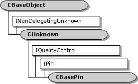

description: The CBasePin class is an abstract class that implements a generic pin. ms.assetid: 23b9a0e2-24fe-4ff9-b2bb-97630c237de9 title: CBasePin class (Amfilter.h) ms.topic: reference ms.date: 4/26/2023 topic_type:
[The feature associated with this page, DirectShow, is a legacy feature. It has been superseded by MediaPlayer, IMFMediaEngine, and Audio/Video Capture in Media Foundation. Those features have been optimized for Windows 10 and Windows 11. Microsoft strongly recommends that new code use MediaPlayer, IMFMediaEngine and Audio/Video Capture in Media Foundation instead of DirectShow, when possible. Microsoft suggests that existing code that uses the legacy APIs be rewritten to use the new APIs if possible.]

The CBasePin class is an abstract class that implements a generic pin.
The following topics describe how to use this class:
| Protected Member Variables | Description |
|---|---|
| m_pName | Pin name. |
| m_Connected | Pointer to the pin that is connected to this pin. |
| m_dir | Direction of the pin. |
| m_pLock | Pointer to a critical section object. |
| m_bRunTimeError | Flag that indicates whether a run-time error has occurred. |
| m_bCanReconnectWhenActive | Flag that indicates whether the pin supports dynamic reconnection. |
| m_bTryMyTypesFirst | Flag that indicates whether the pin tries its own preferred media types before those of the receiving pin. |
| m_pFilter | Pointer to the filter that created the pin. |
| m_pQSink | Pointer to the object that handles quality messages. |
| m_TypeVersion | Current version of the set of preferred media types. |
| m_mt | Media type for the current pin connection. |
| m_tStart | Segment start time. |
| m_tStop | Segment stop time. |
| m_dRate | Segment rate. |
| Protected Methods | Description |
| DisplayPinInfo | Traces a pin connection during debugging. |
| DisplayTypeInfo | Displays media type information during debugging. |
| AttemptConnection | Connects to another pin using a specified media type. |
| TryMediaTypes | Given a list of media types, tries to complete a connection using one of those types. |
| AgreeMediaType | Searches for a media type to make a pin connection. |
| DisconnectInternal | Breaks the current pin connection. |
| Public Methods | Description |
| CBasePin | Constructor method. |
| **~ CBasePin** | Destructor method. Virtual. |
| IsConnected | Determines whether the pin is connected to another pin. |
| GetConnected | Retrieves the pin that is connected to this pin. |
| IsStopped | Determines whether the filter containing this pin is stopped. |
| GetMediaTypeVersion | Retrieves a version number for the set of preferred media types. Virtual. |
| IncrementTypeVersion | Increments the version number on the set of preferred media types. |
| Active | Notifies the pin that the filter is now active. Virtual. |
| Inactive | Notifies the pin that the filter is no longer active. Virtual. |
| Run | Notifies the pin that the filter is now running. Virtual. |
| SetMediaType | Sets the media type for the connection. Virtual. |
| CheckConnect | Determines whether a pin connection is suitable. Virtual. |
| BreakConnect | Releases the pin from a connection. Virtual. |
| CompleteConnect | Completes a connection to another pin. Virtual. |
| GetMediaType | Retrieves a preferred media type, by index value. Virtual. |
| CurrentStopTime | Retrieves the segment stop time. |
| CurrentStartTime | Retrieves the segment start time. |
| CurrentRate | Retrieves the segment rate. |
| Name | Retrieves the pin identifier. |
| SetReconnectWhenActive | Specifies whether the pin supports dynamic reconnections. |
| CanReconnectWhenActive | Queries whether the pin supports dynamic reconnections. |
| Pure Virtual Methods | Description |
| CheckMediaType | Determines if the pin accepts a specific media type. |
| IPin Methods | Description |
| Connect | Connects the pin to another pin. |
| ReceiveConnection | Accepts a connection from another pin. |
| Disconnect | Breaks the current pin connection. |
| ConnectedTo | Retrieves the pin connected to this pin. |
| ConnectionMediaType | Retrieves the media type for the current pin connection, if any. |
| QueryPinInfo | Retrieves information about the pin. |
| QueryDirection | Retrieves the direction of the pin (input or output). |
| QueryId | Retrieves the pin identifier. |
| QueryAccept | Determines whether the pin accepts a specified media type. |
| EnumMediaTypes | Enumerates the pin's preferred media types. |
| QueryInternalConnections | Retrieves the pins that are connected internally to this pin (within the filter). |
| EndOfStream | Notifies the pin that no additional data is expected. |
| NewSegment | Notifies the pin that media samples received after this call are grouped as a segment. |
| IQualityControl Methods | Description |
| Notify | Notifies the pin that a quality change is requested. |
| SetSink | Sets an external quality manager. |
| Requirement | Value |
|---|---|
| Header | Amfilter.h (include Streams.h) |
| Library | Strmbase.lib (retail builds); Strmbasd.lib (debug builds) |